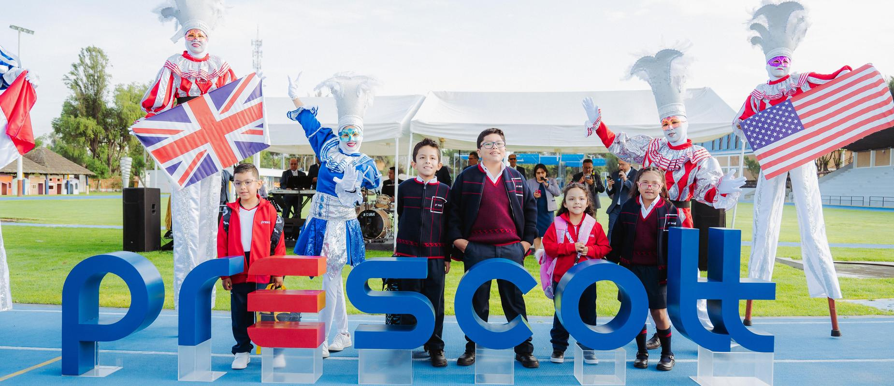

Estudiante Universitario — Administracion de Negocios / Finanzas
Acceder al Currículum AcadémicoEstudiante proactivo con una marcada inclinación hacia la resolución de problemas complejos, el análisis lógico estructurado y el riguroso desarrollo académico. Con experiencia práctica en el campo de Administracion de Negocios y Emprendimientos, asi mismo como de logistica..
Me destaco de manera particular por ser una excelente persona para trabajar en grupos, que siempre esta dispuesto a escuchar diferentes puntos de vista y tomarlos en cuenta, para asi poder llegar a un acuerdo y de la misma manera poder lograr el objetivo plantado.

Exalumno de la comunidad anglo-americana Prescott. Formación cimentada sobre altos estándares de exigencia intelectual, valores fundamentales y excelencia continua, bajo una vision humanista.
| Asignatura | Catedrático | Registro Profesional |
|---|---|---|
| Analisis de Datos | Dr. Ernesto Cuadros-Vargas | LinkedIn Perfil |